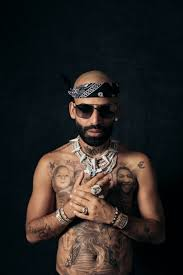
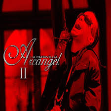
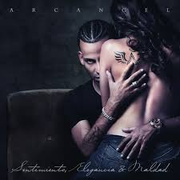

¿CUALES SON SUS CANCIONES MAS ESCUCHADAS
Yo le pregunté a un dentista Del amor a primera vista Dijo que era un error Que eso era de un novelista Soñadores, que en la vida Hay que ser más realista
Y ahora que no te tengo Pienso en todo el tiempo perdido Que perdí contigo
Pues por amarte a ciegas, yo no escuché Y me lancé al vacío por amor Todos me dijeron, todos me advertían Que hay flores que tienen espinas
Yo le pregunté a un señor Del amor y él me dijo Que ignorarlo era mejor Que yo era joven y el dinero Debería de ser más importante Que mil amores
Yo le pregunté a un anciano En un boulevard lejano Del amor y las pasiones Y me dijo: Hijo mío Es un cristal de doble filo Y corta, te guinda de un hilo
Y ahora que no te tengo Pienso en todo el tiempo perdido Que perdí contigo
Pues por amarte a ciegas, yo no escuché Y me lancé al vacío por amor Todos me dijeron, todos me advertían Que hay flores que tienen espinas
Yo le pregunté a mi padre Del amor y la inocencia De la fe, la paciencia ¿Y sabes lo que dijo? Hijo, siempre es mejor Ignorar el corazón Hazle caso a tu conciencia
Yo le pregunté a mi madre Del amor que te tenía Y dijo que eran fantasías Que si yo no le creía Con el tiempo, aprendería Que ella tenía razón
Y ahora que no te tengo Pienso en todo el tiempo perdido Que perdí contigo
Pues por amarte a ciegas, yo no escuché Y me lancé al vacío por amor Todos me dijeron, todos me advertían Que hay flores que tienen espinas

